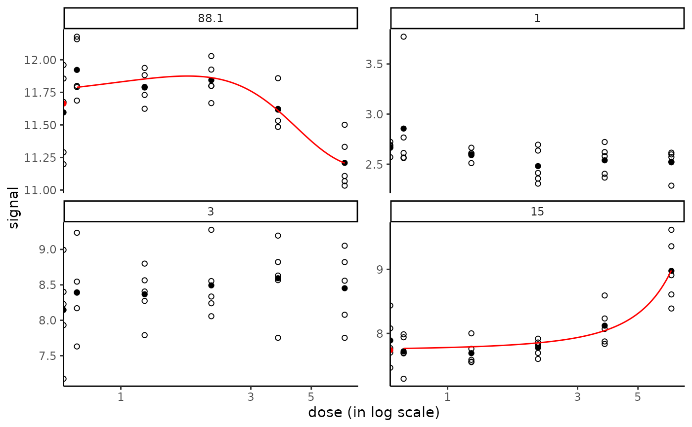
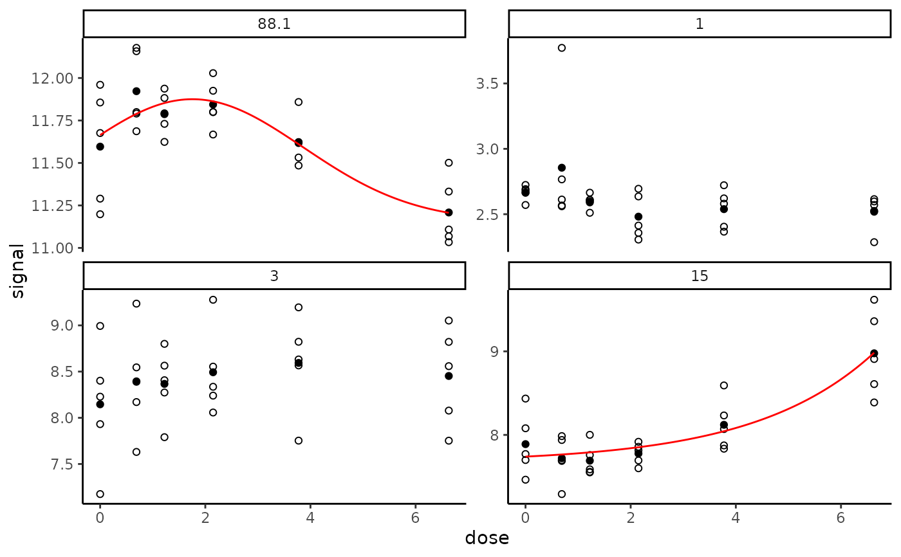
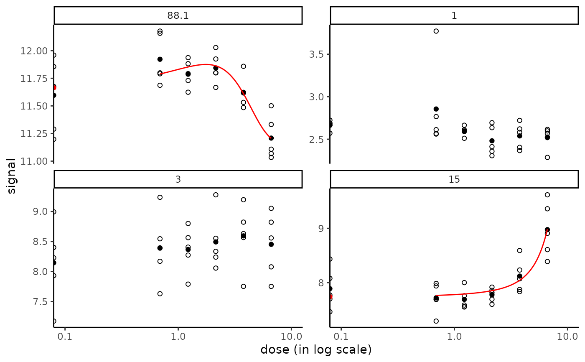
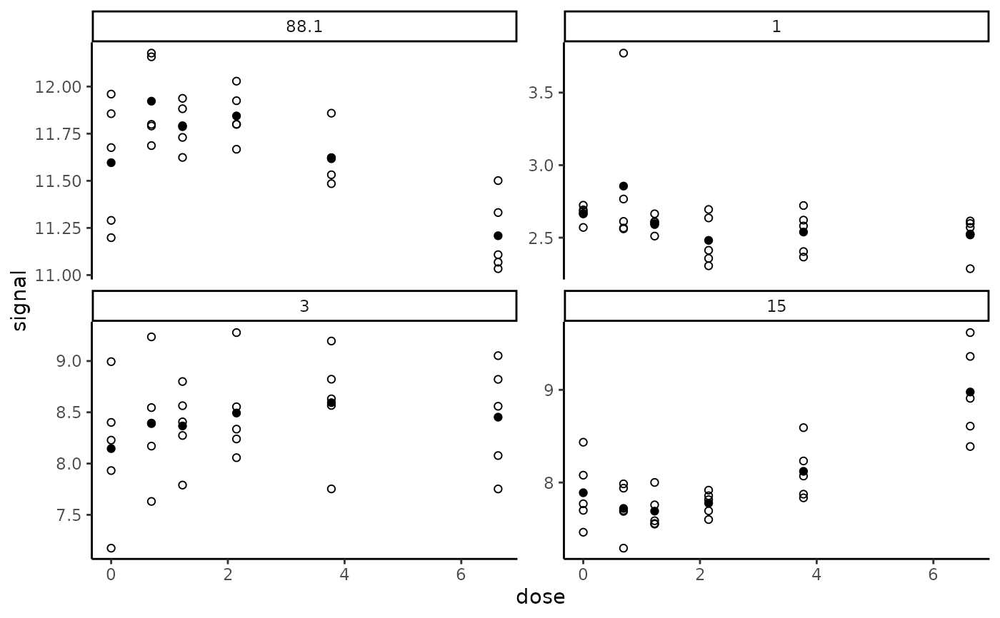

Dose-reponse plot for target items
targetplot.RdPlots dose-response raw data of target items (whether or not their response is considered significant) with fitted curves if available.
Arguments
- items
A character vector specifying the identifiers of the items to plot.
- f
An object of class
"drcfit".- add.fit
If
TRUEthe fitted curve is added for items which were selected as responsive items and for which a best fit model was obtained.- dose_log_transfo
If
TRUE, default choice, a log transformation is used on the dose axis.
See also
See plot.drcfit.
Examples
# A toy example on a very small subsample of a microarray data set)
#
datafilename <- system.file("extdata", "transcripto_very_small_sample.txt",
package="DRomics")
o <- microarraydata(datafilename, check = TRUE, norm.method = "cyclicloess")
#> Just wait, the normalization using cyclicloess may take a few minutes.
s_quad <- itemselect(o, select.method = "quadratic", FDR = 0.01)
#> Removing intercept from test coefficients
f <- drcfit(s_quad, progressbar = TRUE)
#> The fitting may be long if the number of selected items is high.
#>
|
| | 0%
|
|==== | 6%
|
|======== | 12%
|
|============ | 18%
|
|================ | 24%
|
|===================== | 29%
|
|========================= | 35%
|
|============================= | 41%
|
|================================= | 47%
|
|===================================== | 53%
|
|========================================= | 59%
|
|============================================= | 65%
|
|================================================= | 71%
|
|====================================================== | 76%
|
|========================================================== | 82%
|
|============================================================== | 88%
|
|================================================================== | 94%
|
|======================================================================| 100%
# Plot of chosen items with fitted curves when available
#
targetitems <- c("88.1", "1", "3", "15")
targetplot(targetitems, f = f)
#> Warning: log-10 transformation introduced infinite values.
#> Warning: log-10 transformation introduced infinite values.
#> Warning: log-10 transformation introduced infinite values.

# \donttest{
# The same plot in raw scale instead of default log scale
#
targetplot(targetitems, f = f, dose_log_transfo = FALSE)

# The same plot in x log scale choosing x limits for plot
# to enlarge the space between the control and the non null doses
#
if (require(ggplot2))
targetplot(targetitems, f = f, dose_log_transfo = TRUE) +
scale_x_log10(limits = c(0.1, 10))
#> Scale for x is already present.
#> Adding another scale for x, which will replace the existing scale.
#> Warning: log-10 transformation introduced infinite values.
#> Warning: log-10 transformation introduced infinite values.
#> Warning: log-10 transformation introduced infinite values.

# The same plot without fitted curves
#
targetplot(targetitems, f = f, add.fit = FALSE)

# }